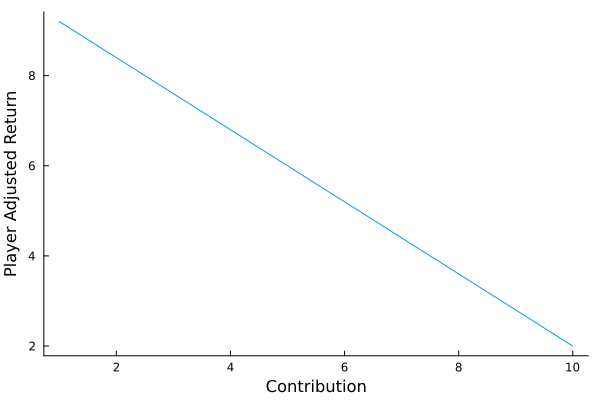

Public Goods Game
The public goods game is a classic social dillema characterized by conflict between the goals of the individual and the goals of a group. In the standard public goods game, each player $p \in \mathbf{p} = \{1, 2, \dots, n\}$ is given an initial amount of money $m > 0$ and contributes $c_p \in [0, m]$ to a public good. Each player makes this decision without knowing the contribution of the other players. Once all players have contributed, the contributions are summed, multiplied by a factor $1 > g > n$ and divided evenly among all $n$ players. Thus, the payout for each player is:
\[\textrm{payout} = \frac{g}{n}\sum_{p=1}^n c_p.\]
At the end, the total money each player has is
\[t_ p = m - c_p + \textrm{payout}.\]
So long as $g < n$, each player is better off by contributing nothing. However, if all players follow that strategy, no one receives more than the initial endowment of $m$ dollars. We can see why it is rational to contribute zero dollars if we exclude the contributions of other players from the equation above. This results in a linear function relating the player $p$'s contribution to $p$'s adjusted return:
\[t_ p^{\prime} = m - c_p + \frac{g \cdot c_p}{n} = m + c_p \cdot \frac{g-n}{n}.\]
The slope is negative so long $g < n$, which means each dollar contributed results in a loss, as illustrated below.
Show Code
using Plots
f(m, c, g, n) = m - c + g * c / n
f(m, c, g, n) = m + c * ((g - n) / n)
n = 10
m = 10
g = 2
x = 1:10
y = f.(m, x, g, n)
payout_plot = plot(x, y, label = false, grid = false, xlabel = "Contribution", ylabel = "Player Adjusted Return")
savefig("payout_plot.png")"/home/runner/work/PublicGoodsTournament.jl/PublicGoodsTournament.jl/docs/build/payout_plot.png"
The Iterated Public Goods Game with Punishment
In the tournament, we will use a variation of the public goods game involving multiple rounds and the option to punish other players. This variant of the public goods game is interesting because players can form reputations, adapt strategies, and retaliate.